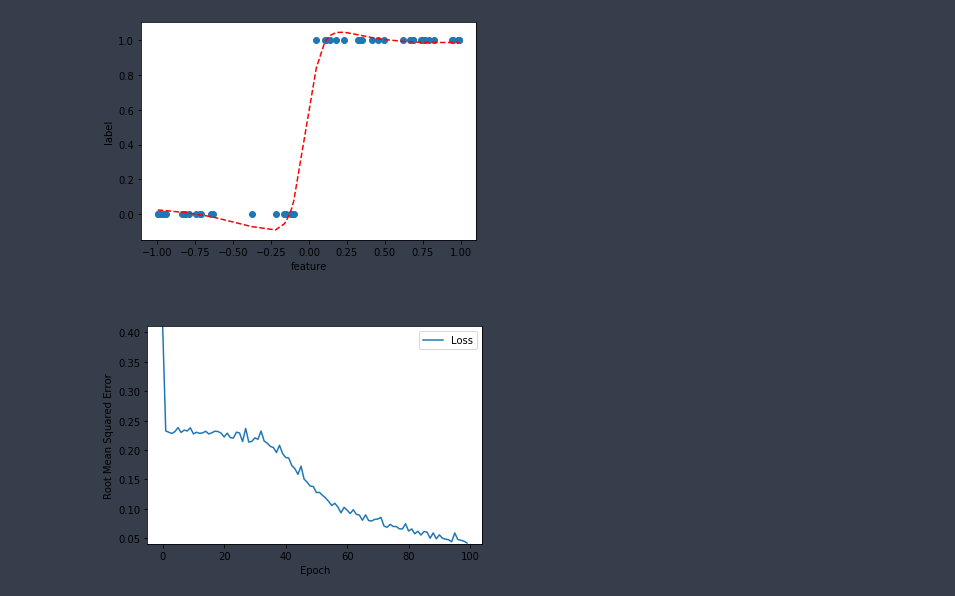
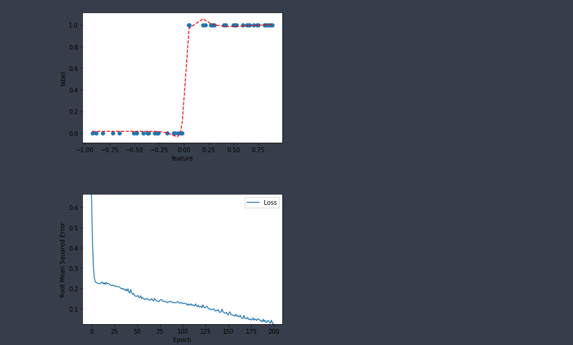

Regressão MLP com dados sintéticos
Introdução
Vamos analisar a capacidade de um MLP (Multi Layer Perceptron) em aproximar quatro funções diferentes.Em cada caso vamos extrair N = 50 pontos escolhidos uniformemente em x no intervalo (-1, 1) e os correspondentes valores f(x) calculados.
Estes pontos serão depois usados para treinar uma rede neuronal com:
- Duas camadas com:
- Três unidades escondidas com:
- Funcões de activação tanh e:
- Unidades de saída lineares
Nota: link para o jupyter notebook com o código completo: MLP_Regression_Synthetic_Data.ipynb
Hyperparameters que podem ser alterados:- Learning rate
- Número de épocas
- Tamanho do batch
Módulos a importar
import pandas as pd import tensorflow as tf from matplotlib import pyplot as plt
Definir funções que constroem e treinam o modelo
Vamos definir duas funções:build_model(my_learning_rate)
que constroi um modelo vaziotrain_model(model, feature, label, epochs)
que treina o modelo a partir dos exemplos (feature e label) que lhe passamos
#@title Função para criar o modelo
def build_model(my_learning_rate):
"""
Cria e compila um modelo de regressão linear.
Arguments:
my_learning_rate -- a taxa de aprendizagem
Returns:
model -- o modelo compilado
"""
# O modelo mais simples de tf.keras é o sequencial
# O modelo sequencial pode conter uma ou mais camadas
model = tf.keras.models.Sequential()
# Topografia do modelo
# Duas camadas escondidas, cada uma com 3 unidades
# A camada de output só tem uma unidade (visto que só queremos
# prever um único valor) e não usa nenhuma função de activação
model.add(tf.keras.layers.Dense(units=3, activation="tanh", input_shape=(1,)))
model.add(tf.keras.layers.Dense(units=3, activation="tanh"))
model.add(tf.keras.layers.Dense(1))
# Compilar a topografia do modelo
# Configurar o treino para minimizar o erro quadrático médio
model.compile(optimizer=tf.keras.optimizers.RMSprop(lr=my_learning_rate),
loss="mean_squared_error",
metrics=[tf.keras.metrics.RootMeanSquaredError()])
return model
#@title Função para treinar o modelo
def train_model(model, feature, label, epochs, batch_size):
"""
Treina o modelo de acordo com os dados de entrada
Arguments:
model -- o modelo a ser treinado
feature -- um array de features (os valores x)
label -- um array de labels (os valores y = f(x))
epochs -- numero de epocas de treino
batch_size -- tamanho do batch
Returns:
epochs -- Lista de épocas
rmse -- Raíz quadrada do erro quadrático médio
"""
# Preparar uma diretoria de logs para ser usada pelo tensorboard
log_dir = "logs/fit/" + datetime.datetime.now().strftime("%Y%m%d-%H%M%S")
tensorboard_callback = tf.keras.callbacks.TensorBoard(log_dir=log_dir, histogram_freq=1)
# Passa os valores das features e os valores das labels
# para o modelo. O modelo vai treinar durante o número
# de epochs especificado e gradualmente vai aprendendo
# como é que os valores das features se relacionam com
# os valores das labels
history = model.fit(x=feature,
y=label,
batch_size=batch_size,
epochs=epochs,
callbacks=[tensorboard_callback])
# Gather the trained model's weight and bias.
trained_weight = model.get_weights()
trained_bias = model.get_weights()
# A lista das epocas e guardada em separado
epochs = history.epoch
# Faz um snapshot do historico de cada epoca
hist = pd.DataFrame(history.history)
# Recolhe especificamente a raiz quadrada do erro quadrático médio
# em cada epoca
rmse = hist["root_mean_squared_error"]
return epochs, rmse
Definir funções auxiliares para visualizar os resultados
Vamos definir duas funções de forma a conseguirmos visualizar o modelo e a curva de perda:plot_the_model(feature, label, preds)
que mostra os pontos originais e uma linha com os pontos previstos pela redeplot_the_loss_curve(epochs, rmse)
que mostra a curva de perda em função das épocas
#@title Gráfico para mostrar o modelo treinado
def plot_the_model(feature, label, preds):
"""
Gráfico que mostra o modelo treinado contra as features e labels
Arguments:
feature -- array de features que passámos à rede para treino
label -- array de labels correspondentes às features
preds -- array de valores previstos pelo modelo
"""
# Nomes para os eixos
plt.xlabel("feature")
plt.ylabel("label")
# Valores das features vs. valores das labels
plt.scatter(feature, label)
# Cria uma representação a encarnado do modelo.
plt.plot(feature, preds, 'r--')
# Faz o render do scatter plot e da linha encarnada
plt.show()
#@title Gráfico para mostrar o rmse vs. epochs
def plot_the_loss_curve(epochs, rmse):
"""
Gráfico da curva de perda (loss vs. epoch)
Arguments:
epochs -- número de épocas
rms -- erro quadrático médio
"""
plt.figure()
plt.xlabel("Epoch")
plt.ylabel("Root Mean Squared Error")
plt.plot(epochs, rmse, label="Loss")
plt.legend()
plt.ylim([rmse.min()*0.97, rmse.max()])
plt.show()
Definir o conjunto de dados
Vamos definir quatro funções para as quais queremos que a rede neuronal aprenda a sua representação:- \(f(x) = x^2\)
- \(f(x) = sin(x)\)
- \(f(x) = |x|\)
- \(f(x) = H(x)\)
def draw_points(n, func):
"""
Constroi conjuntos de dados de acordo com a função escolhida
Arguments:
n -- Total de pontos
func -- Tipo de função (Aceita: sin, power_two, abs, heaviside)
Returns:
feature -- Um array com as features (valores de x)
label -- Um array com as labels (valores de y = f(x))
"""
feature = np.sort(np.random.uniform(-1, 1, n))
if func == 'sin':
label = np.sin(feature)
elif func == 'power_two':
label = np.power(feature, 2)
elif func == 'abs':
label = np.abs(feature)
elif func == 'heaviside':
label = np.heaviside(feature, 0)
else:
print("Erro")
return 0, 0
return feature, label
Podemos agora gerar dados e ver a rede em acção:
# Escolher uma das seguintes funções: # my_feature, my_label = draw_points(50, func='power_two') # my_feature, my_label = draw_points(50, func='sin') # my_feature, my_label = draw_points(50, func='abs') #Heaviside my_feature, my_label = draw_points(50, func='heaviside')
Configurar os Hyperparameters e treinar o modelo
Aqui podemos experimentar diversas combinações dos Hyperparameters para tentar obter o melhor ajustamento.
# Limpa os logs das iterações anteriores
!rm -rf ./logs/
#Hyperparameters
learning_rate=0.01
epochs=100
my_batch_size=10
my_model = build_model(learning_rate)
epochs, rmse = train_model(my_model, my_feature, my_label, epochs, my_batch_size)
Fazer previsões e visualizar os resultados.
# Fazer previsões preds = my_model.predict(my_feature) preds = np.squeeze(preds) # Ver os resultados plot_the_model(my_feature, my_label, preds) plot_the_loss_curve(epochs, rmse)Para este caso concreto da aproximação à função de Heaviside, os parâmetros aprendidos pela rede neuronal é razoável: 
No gráfico de cima, Os pontos a azul representam os dados reais. Os traços a encarnado mostram os outputs do modelo treinado. Idealmente a linha vermelha deve alinhar com os pontos azuis. Há uma certa aleatoriedade quando o modelo é treinado, de forma que os resultados em cada treino poderão ser ligeiramente diferentes. O gráfico de baixo mostra a curva de perda. Podemos ver que a curva decresce, o que é bom, mas não fica plana, que é um indicativo que o modelo não treinou o suficiente. Se alterarmos os Hyperparameters:
#Hyperparameters learning_rate=0.01 epochs=200 my_batch_size=20obtemos, 
que melhora o ajuste.
Sumário aos ajustes dos Hyperparameters.
A maior parte dos problemas de machine learning requerem ajustes em vários parâmetros e o problema é que não há uma receita para cada modelo.Se baixarmos a taxa de aprendizagem (learning rate) podemos ajudar determinado modelo a convergir de forma eficiente mas pode fazer com que um outro modelo convirja lentamente. Há que experimentar várias combinações do conjunto de Hyperparameters de acordo com o conjunto de dados em estudo. Dito isto, há algumas "regras" para ajudar a escolher os Hyperparameters:
- A função de perda do treino deve decrescer, primeiro de uma forma acentuada e depois mais lentamente até que o declive da curva se apróxima de zero.
- Se a função de perda do treino não convergir => aumenta o número de épocas
- Se a função de perda do treino decresce muito lentamente => aumenta a taxa de aprendizagem (learning rate). Atenção porque se a taxa for muito elevada pode fazer com que não haja convergência.
- Se a função de perda do treino varia de forma descontrolada (altos e baixos acentuados) => diminui a taxa de aprendizagem
- Diminuir a taxa de aprendizagem e aumentar o número de épocas ou o tamanho do batch, regra geral, é uma boa combinação.
- Baixar muito o tamanho do batch pode causar alguma instabilidade. Primeiro tenta-se um valor elevado para o tamanho do batch e depois vai-se baixando aos poucos.
- Importante: A combinação ideal de Hyperparameters é dependente do conjunto de dados em análise, de forma que devemos sempre experimentar várias combinações e verificar os resultados de forma a encontrar a combinação ideal.
Arquitectura típica de regressão MLP
| Hyperparameter | Valores típicos |
|---|---|
| # unidades de entrada (input neurons) | Uma por feature de entrada |
| # camadas escondidas (hidden layers) | Depende mas tipicamente de 1 a 5 |
| # unidades por camada escondida (neurons per hidden layer) | Depende mas tipicamente de 10 a 100 |
| # unidades de saída (output neurons) | 1 por cada dimensão de previsão |
| Activação das camadas escondidas (Hidden activation) | ReLU |
| Activação da saída (output activation) | Nenhuma ou ReLU/softplus (se queremos outputs positivos) ou logistic/tanh (se queremos outputs limitados) |
| Função de perda (loss function) | MSE ou MAE/Huber (se houver outliers) |